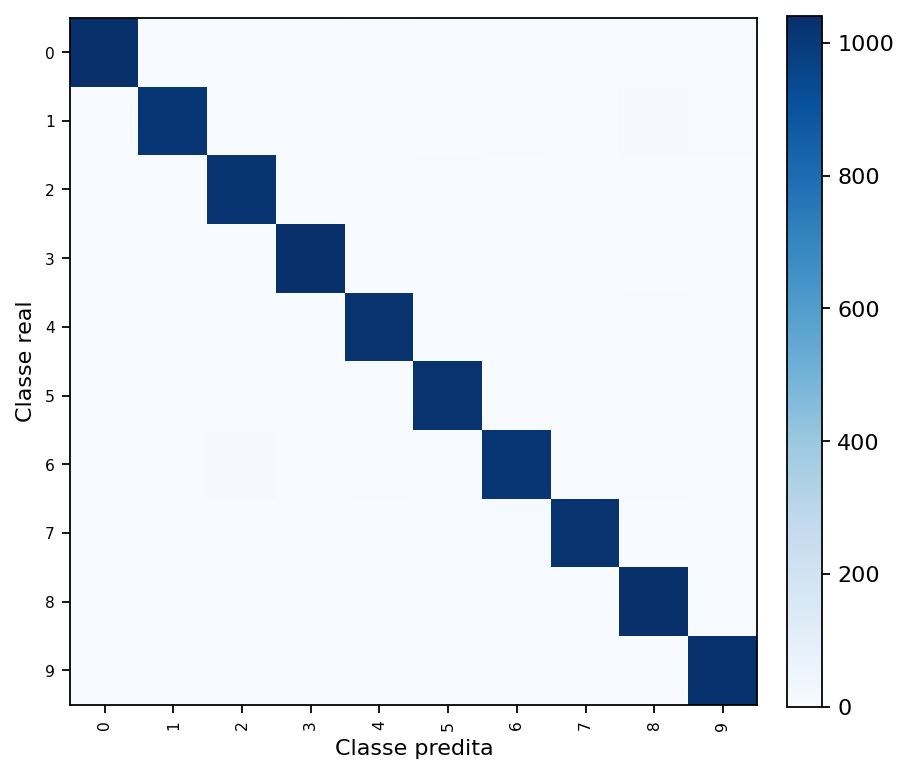
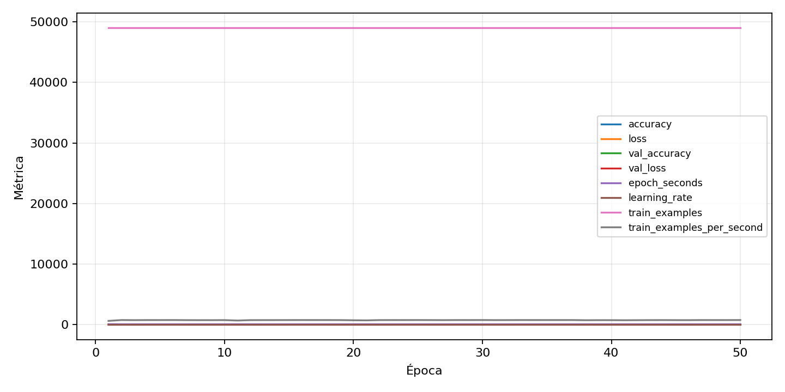

| n_samples | 10500 |
|---|---|
| loss | 0.11891581863164902 |
| accuracy | 0.9789523809523809 |
| balanced_accuracy | 0.9789523809523809 |
| macro_f1 | 0.9789633407474518 |


| Índice | Classe | Suporte | Precisão | Recall | F1 |
|---|---|---|---|---|---|
| 0 | 0 | 1050 | 0.9838095238095238 | 0.9838095238095238 | 0.9838095238095238 |
| 1 | 1 | 1050 | 0.9873663751214772 | 0.9676190476190476 | 0.9773929773929774 |
| 2 | 2 | 1050 | 0.9641509433962264 | 0.9733333333333334 | 0.9687203791469196 |
| 3 | 3 | 1050 | 0.9820415879017014 | 0.9895238095238095 | 0.9857685009487667 |
| 4 | 4 | 1050 | 0.969811320754717 | 0.979047619047619 | 0.9744075829383886 |
| 5 | 5 | 1050 | 0.9837320574162679 | 0.979047619047619 | 0.9813842482100239 |
| 6 | 6 | 1050 | 0.9787849566055931 | 0.9666666666666667 | 0.9726880689985624 |
| 7 | 7 | 1050 | 0.9912959381044487 | 0.9761904761904762 | 0.9836852207293666 |
| 8 | 8 | 1050 | 0.9603321033210332 | 0.9914285714285714 | 0.9756326148078726 |
| 9 | 9 | 1050 | 0.9894534995206136 | 0.9828571428571429 | 0.9861442904921165 |
{"adapter":"kmnist","balance_mode":"all_raw","class_names":["0","1","2","3","4","5","6","7","8","9"],"dataset":"kmnist","dataset_options":{},"dataset_root":"/home/msduda/datasets-tcc/kmnist","native_channels":1,"normalization":"unit_interval","num_classes":10,"protocol":{"checkpoint_monitor":"val_macro_f1","dtype_policy":"mixed_float16","early_stopping":{"patience":50,"restore_best_weights":true},"evaluation_augmentation":false,"input_channels":"native","optimizer":"Adam","pretrained_weights":false,"reduce_lr_on_plateau":{"factor":0.3,"min_lr":1e-07,"patience":50},"resize":"proportional_padding","test_time_augmentation":false,"training_from_scratch":true},"seed":42,"source_fingerprint":"8928d478d8d23938a73b4f4a92c407bf3d74beff1e0e67e3644d6ecdc30cf828","source_manifest":{"class_names":["0","1","2","3","4","5","6","7","8","9"],"joined_samples":70000,"metadata":{"layout":"kmnist-component-npz"},"name":"kmnist","native_channels":1,"source_path":"/home/msduda/datasets-tcc/kmnist","splits":{"test":10000,"train":60000},"target_size":64},"target_size":64,"test_fraction":0.15,"train_fraction":0.7,"training":{"augmentation":{"brightness_delta":0.0,"contrast_lower":1.0,"contrast_upper":1.0,"cutout_max_frac":0.0,"cutout_prob":0.0,"flip_lr":false,"noise_std":0.0,"translate_frac":0.0,"zoom_max":1.0,"zoom_min":1.0},"batch_size":128,"default_image_size":64,"dtype_policy":"mixed_float16","early_stopping_patience":50,"extra_fraction":0.0,"image_size_overrides":{"gtsrb":128},"keras_verbose":1,"learning_rate":0.0003,"max_epochs":50,"preprocess_cache_max_mib":0,"reduce_lr_factor":0.3,"reduce_lr_min_lr":1e-07,"reduce_lr_patience":50,"shuffle_buffer_max_mib":0},"validation_fraction":0.15}
{"epochs_completed":50,"epochs_recorded":50,"evaluation_seconds":23.175940334000188,"fit_seconds_current_attempt":3909.9731927030007,"max_epoch_seconds":78.77394149099928,"max_epochs":50,"mean_epoch_seconds":65.57161806359981,"mean_train_examples_per_second":748.0830001862477,"median_train_examples_per_second":754.5128920496857,"min_epoch_seconds":64.21277808499872,"selected_checkpoint":"/mnt/e/tcc-benchmark/outputs/kmnist-alldata-noaug-batch-sweep-2026-08-06/batch-128/kmnist/runs/kmnist__unit_interval__all_raw__seed-42/checkpoints/best.keras","total_seconds":3278.580903179991,"training_seconds":3278.580903179991,"wall_seconds_current_attempt":3936.753249280002}
{"elapsed_seconds":3936.8068373079986,"event_counts":{"data_preparation_end":1,"data_preparation_start":1,"epoch_end":50,"evaluation_end":1,"evaluation_start":1,"fit_end":1,"fit_start":1,"periodic":777,"run_completed":1,"train_start":1},"generated_at":"2026-08-07T08:58:53.672+00:00","gpu_backend":"pynvml","interval_seconds":5.0,"metrics":{"cpu_percent":{"count":835,"max":17.8,"mean":12.900359281437124,"min":0.0,"p50":12.5,"p95":16.7},"disk_data_free_bytes":{"count":835,"max":998270005248.0,"mean":998269943925.7294,"min":998269935616.0,"p50":998269943808.0,"p95":998269943808.0},"disk_data_percent":{"count":835,"max":2.7,"mean":2.7,"min":2.7,"p50":2.7,"p95":2.7},"disk_data_total_bytes":{"count":835,"max":1081101176832.0,"mean":1081101176832.0,"min":1081101176832.0,"p50":1081101176832.0,"p95":1081101176832.0},"disk_data_used_bytes":{"count":835,"max":27838885888.0,"mean":27838877578.27066,"min":27838816256.0,"p50":27838877696.0,"p95":27838877696.0},"disk_output_free_bytes":{"count":835,"max":207355670528.0,"mean":207342824799.96167,"min":207341682688.0,"p50":207342596096.0,"p95":207342895104.0},"disk_output_percent":{"count":835,"max":79.3,"mean":79.3,"min":79.3,"p50":79.3,"p95":79.3},"disk_output_total_bytes":{"count":835,"max":1000186310656.0,"mean":1000186310656.0,"min":1000186310656.0,"p50":1000186310656.0,"p95":1000186310656.0},"disk_output_used_bytes":{"count":835,"max":792844627968.0,"mean":792843485856.0383,"min":792830640128.0,"p50":792843714560.0,"p95":792844533760.0},"elapsed_seconds":{"count":835,"max":3936.747008,"mean":1972.8457831580838,"min":0.030919,"p50":1971.248177,"p95":3758.8764428},"gpu_count":{"count":835,"max":1.0,"mean":1.0,"min":1.0,"p50":1.0,"p95":1.0},"gpu_memory_percent":{"count":835,"max":34.70120429992676,"mean":34.52944532839838,"min":30.06415367126465,"p50":34.522294998168945,"p95":34.674930572509766},"gpu_memory_total_bytes":{"count":835,"max":8589934592.0,"mean":8589934592.0,"min":8589934592.0,"p50":8589934592.0,"p95":8589934592.0},"gpu_memory_used_bytes":{"count":835,"max":2980810752.0,"mean":2966056768.6898203,"min":2582491136.0,"p50":2965442560.0,"p95":2978553856.0},"gpu_temperature_c":{"count":835,"max":50.0,"mean":42.55568862275449,"min":37.0,"p50":42.0,"p95":48.0},"gpu_utilization_percent":{"count":835,"max":92.0,"mean":18.49820359281437,"min":0.0,"p50":16.0,"p95":41.0},"process_cpu_percent":{"count":835,"max":220.1,"mean":165.97748502994014,"min":0.0,"p50":159.6,"p95":214.2},"process_read_bytes":{"count":835,"max":14606336.0,"mean":14534305.264670659,"min":7933952.0,"p50":14606336.0,"p95":14606336.0},"process_rss_bytes":{"count":835,"max":4093214720.0,"mean":3849960348.6658683,"min":1030172672.0,"p50":3993104384.0,"p95":4054728704.0},"process_vms_bytes":{"count":835,"max":50037157888.0,"mean":49690076686.103,"min":39581298688.0,"p50":49886253056.0,"p95":49970049024.0},"process_write_bytes":{"count":835,"max":1425408.0,"mean":1410677.1161676648,"min":4096.0,"p50":1425408.0,"p95":1425408.0},"ram_available_bytes":{"count":835,"max":15521320960.0,"mean":12871601513.772455,"min":12630007808.0,"p50":12728074240.0,"p95":13514953113.599998},"ram_percent":{"count":835,"max":24.0,"mean":22.551616766467063,"min":6.6,"p50":23.4,"p95":23.8},"ram_total_bytes":{"count":835,"max":16619077632.0,"mean":16619077632.0,"min":16619077632.0,"p50":16619077632.0,"p95":16619077632.0},"ram_used_bytes":{"count":835,"max":3989069824.0,"mean":3747476118.227545,"min":1097756672.0,"p50":3891003392.0,"p95":3951342796.8}},"sample_count":835,"schema_version":1}